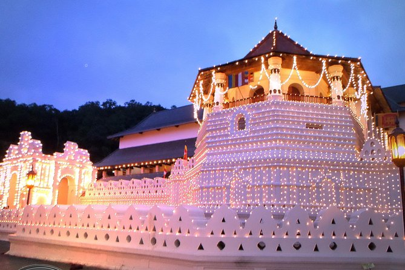
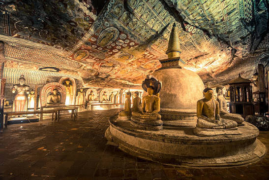
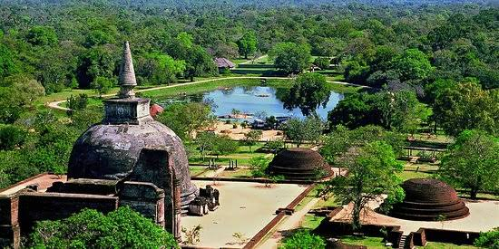

Cultural Tours Sri Lanka
Explore Sri Lanka's rich heritage through temples, ancient cities and historical landmarks with LetsGo.
Ancient History
Discover sacred sites, historic kingdoms and centuries-old architecture.
Temple Visits
Visit some of Sri Lanka's most important Buddhist and cultural landmarks.
Local Experiences
Feel the heartbeat of Sri Lanka through traditional culture, food and heritage.
About Sri Lankan Culture
Heritage & History
Sri Lanka's cultural landscape is rich with ancient kingdoms, majestic temples, heritage towns and living traditions shaped over centuries.
Historical Destinations
Visit the Temple of the Tooth in Kandy, Sigiriya Rock Fortress, Dambulla Cave Temple, Anuradhapura, Polonnaruwa and Galle Fort to experience the island's heritage.
Why Travelers Love Culture Tours
These journeys offer a deeper understanding of Sri Lanka's spiritual life, architectural beauty and community traditions.
Ideal for
Culture tours are ideal for history lovers, photographers, families and travelers interested in local traditions.
Historical Destinations

Temple of the Tooth
Visit one of Sri Lanka's most sacred Buddhist landmarks and experience the rich culture of Kandy.
Explore Kandy Cultural Tour →Sigiriya Rock Fortress
Discover the ancient royal city, UNESCO heritage site, and fascinating history of Sri Lanka.
Explore Sigiriya Cultural Tour →
Dambulla Cave Temple
Explore the historic cave temple complex with ancient murals, statues, and Buddhist heritage.
Explore Dambulla Cultural Tour →Galle Fort
Experience colonial history, heritage streets, museums, and beautiful ocean views.
Explore Galle Heritage Tour →Anuradhapura
Explore ancient kingdoms, sacred temples, stupas, and Sri Lanka's historical heritage.
Explore Anuradhapura Cultural Tour →
Polonnaruwa
Discover ancient ruins, royal palaces, and UNESCO heritage sites from Sri Lanka's medieval era.
Explore Polonnaruwa Cultural Tour →Tour Highlights
Ancient History
Explore the island's royal cities, ruins and long cultural traditions.
Temples
Visit cherished religious landmarks with spiritual and architectural significance.
Traditional Culture
Experience local customs, festivals, costume and daily cultural life.
Heritage Sites
Enjoy visits to ancient locations that showcase Sri Lanka's rich past.
Frequently Asked Questions
What are the best cultural destinations in Sri Lanka?
Kandy, Sigiriya, Dambulla, Anuradhapura, Polonnaruwa and Galle Fort are top choices.
Is a culture tour suitable for first-time visitors?
Yes, it is one of the best ways to understand Sri Lanka's history, heritage and traditions.
Can I include food and local experiences?
Absolutely. Cultural tours can include food stops, markets and local interactions.
Related Tours
Book Your Cultural Tour
Experience Sri Lanka's heritage and history with LetsGo and comfortable private transport.